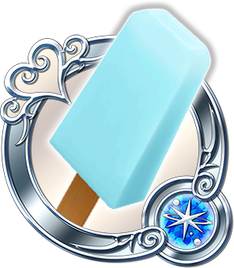

Sea Salt Ice Cream Recipe  Required Equipment: Saucepan, popsicle mold, whisk Ingredients: 2 cups heavy cream 1 cup milk ½ cup honey 1 tsp vanilla extract sea salt 13 drops blue food coloring 3 drops green food coloring Preparation steps: -In a saucepan, over medium-high heat, combine the heavy cream, milk and honey. Once combined remove the saucepan from the heat and add the vanilla extract. -Pour the mixture in a bowl and slowly add the sea salt. Taste until you are happy with the level of saltiness. It is easy to overdo it so be careful. Finally, add the food coloring. I kept the coloring to a minimum but feel free to double it if you would like a stronger color. -Place in the refrigerator and allow it to chill for 2 hours. After it has cooled, place the cream mixture in the molds and allow to chill in the freezer overnight. Enjoy!